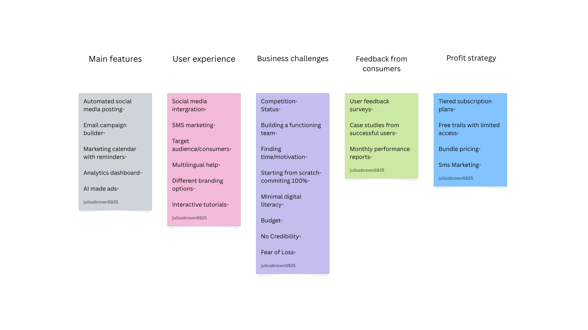

My Projects
Problem Statement
Small businesses often lack the time, budget, or expertise to market themselves effectively. This project offers a streamlined website that simplifies digital marketing, helping businesses grow without needing a full marketing team.
Algorithmic Design Final Project

This repository contains my final project for Algorithmic Design.
Affinity Diagram
This affinity diagram organizes ideas for a marketing website that helps businesses automate and manage their campaigns. Clusters include core features, feedback from consumers, user experience, profit strategies, and business challenges. This will help define the scope and direction of the upcoming prototype.
Sketches
These sketches illustrate three different user interactions with our proposed solution, showing the layout and flow of the interface from multiple perspectives.